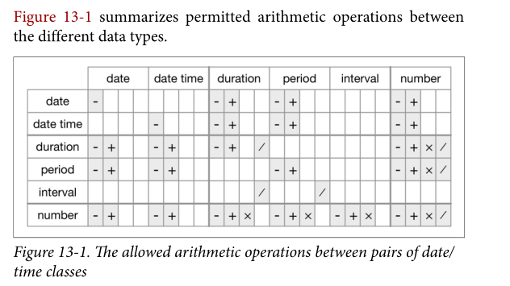

4.3 Time span
接下来我们将讨论如何对时间进行数学运算，其中包括减法、加法和除法。我们可以把用于进行数学运算的时间称为时间间隔(time span)，它表示一种跨度，而不是某个静态的时间。本节将介绍3种用于表示时间间隔的重要类：
- 时期（Durations）：以秒为单位表示一段精确的时间
- 阶段(Periods)： 用人类单位定义的时间间隔，如几周或几个月
- 区间(Intervals)：由起点和终点定义的一段时间
4.3.1 时期 Durations
默认情况下，如果我们将两个日期相间，将得到一个 difftime 类对象：
difftime 对象的单位可以是秒、分钟、小时、日或周。这种模棱两可的对象处理起来非常困难，，所以 lubridate提供了总是以秒为单位的另一种时间间隔：时期。
可以用很多方便的函数来构造时期，它们有统一的格式d + 时间单位（复数）：
dseconds(15)
#> [1] "15s"
dminutes(10)
#> [1] "600s (~10 minutes)"
dhours(c(12,24))
#> [1] "43200s (~12 hours)" "86400s (~1 days)"
ddays(0:5)
#> [1] "0s" "86400s (~1 days)" "172800s (~2 days)"
#> [4] "259200s (~3 days)" "345600s (~4 days)" "432000s (~5 days)"
dweeks(3) ## 没有dmonths()
#> [1] "1814400s (~3 weeks)"
dyears(1)
#> [1] "31557600s (~1 years)"时期 Durations 总是以秒为单位来记录时间间隔。使用标准比率（1 分钟为 60 秒，1 小时为 60 分钟，1 天为 24 小时，1 周为 7 天，一年为 365 天）将分钟、小时、周和年转换为秒，从而建立具有更大值的对象。出于相同的原因，没有dmonths()函数, 因为一个月可能有 31 天、30 天、29 天或 28 天，所以 lubridate 不能将它转换为一个确切的秒数。
可以对时期进行加法和乘法操作：
2 * ddays(2)
#> [1] "345600s (~4 days)"
dyears(1) + dweeks(12) + ddays(10)
#> [1] "39679200s (~1.26 years)"最重要的，时期可以和日期时间型数据进行运算 ：
(tomorrow <- today() + ddays(1))
#> [1] "2020-04-30"
(last_year <- now() - dyears(1))
#> [1] "2019-04-30 09:15:23 CST"然而，因为时期表示的是秒为单位的一个精确数值，有时我们会得到意想不到的结果：
one_pm <- ymd_hms("2016-03-12 13:00:00", tz = "America/New_York")
one_pm
#> [1] "2016-03-12 13:00:00 EST"
one_pm + ddays(1)
#> [1] "2016-03-13 14:00:00 EDT"为什么3月12日下午 1 点加上一天后变成了下午 2 点？如果仔细观察，就会发现时区发生了变化。因为夏时制，3 月 12 日只有 23 个小时，但我们告诉 R “加上 24 个小时代表的秒数”，所以得到了一个不正确的时间。
4.3.2 阶段 Periods
为了解决时期对象的问题，lubridate 提供了 阶段 对象。阶段也是一种 time span，但是它不以秒为单位 ； 相反，它使用“人工”时间，比如日和月。这使得阶段使用起来更加符合习惯
one_pm + days(1)告诉 R，加上一天，而不是加上多少秒。
创建阶段对象的函数与时期很类似，只是前面少个“d”，不要把创建阶段的函数与获取时间日期成分的函数搞混了，创建 Periods 的函数都是复数形式：
seconds(15)
#> [1] "15S"
minutes(10)
#> [1] "10M 0S"
hours(c(12,24))
#> [1] "12H 0M 0S" "24H 0M 0S"
days(7)
#> [1] "7d 0H 0M 0S"
months(1:6)
#> [1] "1m 0d 0H 0M 0S" "2m 0d 0H 0M 0S" "3m 0d 0H 0M 0S" "4m 0d 0H 0M 0S"
#> [5] "5m 0d 0H 0M 0S" "6m 0d 0H 0M 0S"
weeks(3)
#> [1] "21d 0H 0M 0S"
years(1)
#> [1] "1y 0m 0d 0H 0M 0S"可以对阶段进行加法和乘法操作：
10 * (months(6) + days(10))
#> [1] "60m 100d 0H 0M 0S"
days(50) + hours(25) + minutes(2)
#> [1] "50d 25H 2M 0S"当然，阶段也可以和日期时间型数据进行运算。与 Durations 相比，使用 Periods 得到的计算结果更符合我们的预期：
## 闰年
ymd("2016-01-01") + dyears(1)
#> [1] "2016-12-31 06:00:00 UTC"
ymd("2016-01-01") + years(1)
#> [1] "2017-01-01"
## 夏时制
one_pm + ddays(1)
#> [1] "2016-03-13 14:00:00 EDT"
one_pm + days(1)
#> [1] "2016-03-13 13:00:00 EDT"There is still one specific problem worth mentioning. That is adding months. Adding months frustrates basic arithmetic because consecutive months have different lengths. With other elements, it is helpful for arithmetic to perform automatic roll over. For example, 12:00:00 + 61 seconds becomes 12:01:01. However, people often prefer that this behavior NOT occur with months. For example, we sometimes want January 31 + 1 month = February 28 and not March 3. %m+% performs this type of arithmetic. Date %m+% months(n) always returns a date in the nth month after Date. If you want minus, %m-% does the job.
jan <- ymd("2010-01-31")
jan + months(1:3) # Feb 31 and April 31 returned as NA, because there is no such date
#> [1] NA "2010-03-31" NA
jan %m+% months(1:3)
#> [1] "2010-02-28" "2010-03-31" "2010-04-30"
jan %m-% months(1:3)
#> [1] "2009-12-31" "2009-11-30" "2009-10-31"%m+% can be also applied to other time span. For example, it is useful when performing arithmetic around a leap year:
leap <- ymd(20200229)
# test if it is a leap year
leap_year(leap)
#> [1] TRUE
leap + years(c(-1, 1))
#> [1] NA NA
leap %m+% years(c(-1, 1))
#> [1] "2019-02-28" "2021-02-28"下面我们使用 Periods 来解决与航班日期有关的一个怪现象。有些飞机似乎从纽约市起飞前就到达了目的地：
flights_dt %>%
filter(arr_time < dep_time) %>%
select(arr_time, dep_time)
#> # A tibble: 10,633 x 2
#> arr_time dep_time
#> <dttm> <dttm>
#> 1 2013-01-01 00:03:00 2013-01-01 19:29:00
#> 2 2013-01-01 00:29:00 2013-01-01 19:39:00
#> 3 2013-01-01 00:08:00 2013-01-01 20:58:00
#> 4 2013-01-01 01:46:00 2013-01-01 21:02:00
#> 5 2013-01-01 00:25:00 2013-01-01 21:08:00
#> 6 2013-01-01 00:16:00 2013-01-01 21:20:00
#> # ... with 10,627 more rows这些都是过夜航班。我们使用了同一种日期来表示出发时间和到达时间，但这些航班是在第二天到达的。将每个过夜航班的到达时间加上一个days(1)，就可以解决这个问题了：
flights_dt <- flights_dt %>%
mutate(overnight = arr_time < dep_time,
arr_time = arr_time + days(overnight * 1))
## 这样一来，航班数据就符合常理了
flights_dt %>% filter(overnight, arr_time < dep_time)
#> # A tibble: 0 x 10
#> # ... with 10 variables: origin <chr>, dest <chr>, dep_delay <dbl>,
#> # arr_delay <dbl>, dep_time <dttm>, sched_dep_time <dttm>, arr_time <dttm>,
#> # sched_arr_time <dttm>, air_time <dbl>, overnight <lgl>4.3.3 区间 Intervals
显然，dyears(1) / ddays(365)应该返回1，因为时期总是以秒来表示的，表示 1 年的时间就定义为相当于 365 天的秒数。
那么years(1) / days(1)应该返回什么呢？如果年份 是 2015 年，那么结果就是 365，但如果年份是 2016 年，那么结果就是 366！没有足够的信息让 lubridate 返回一个明确的结果。lubridate 的做法是给出一个估计值，同时给出一条警告：
如果需要更精确的测量方式，那么就必须使用区间。区间是带有明确起点和终点的时期，这使得它非常精确, 可以用 interval() 来创建一个区间：
一种更简单的创建区间的方式是使用操作符 %--%
要想知道一个区间内有多少个阶段，需要使用整数除法。利用区间进行精确计算：
4.3.4 Conclusion
如何在时期、阶段和区间中进行选择呢？只要能够解决问题，我们就应该选择最简单的数据结构。如果只关心物理时间，那么就使用时期 Durations ； 如果还需要考虑人工时间，那么就使用阶段 Periods ； 如果需要找出人工时间范围内有多长的时间间隔，那么就使用区间。
下图总结了不同数据类型之间可以进行的数学运算：

4.3.5 Exercises
ymd(20150101) + months(0:11)
#> [1] "2015-01-01" "2015-02-01" "2015-03-01" "2015-04-01" "2015-05-01"
#> [6] "2015-06-01" "2015-07-01" "2015-08-01" "2015-09-01" "2015-10-01"
#> [11] "2015-11-01" "2015-12-01"
## To get the vector of the first day of the month for this year, we first need to figure out what this year is, and get January 1st of it
floor_date(today(), "year") + months(0:11)
#> [1] "2020-01-01" "2020-02-01" "2020-03-01" "2020-04-01" "2020-05-01"
#> [6] "2020-06-01" "2020-07-01" "2020-08-01" "2020-09-01" "2020-10-01"
#> [11] "2020-11-01" "2020-12-01"